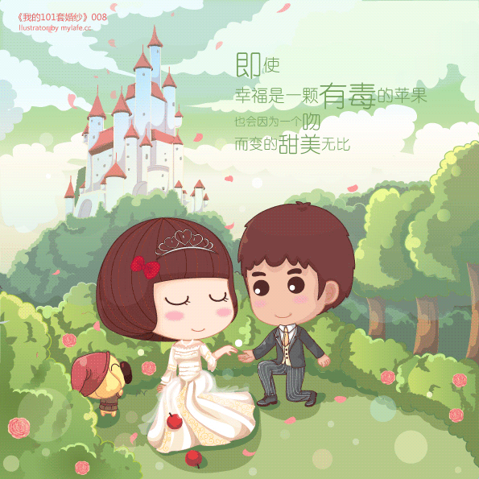

-
自己选的路跪着也要走完
-
我希望我的爱情是这样的
-

我希望我的爱情是这样的，相濡以沫，举案齐眉，平淡如水，亦波涛汹涌。我在岁月中找到她，陪她哭，陪她笑，陪她神经病，安慰她，保护她，照顾她。然后，我们一起在时光中变老，当然最好永远不老...O(∩_∩)O~
我希望我的爱情是这样的，相濡以沫，举案齐眉，平淡如水，亦波涛汹涌。我在岁月中找到她，陪她哭，陪她笑，陪她神经病，安慰她，保护她，照顾她。然后，我们一起在时光中变老，当然最好永远不老...O(∩_∩)O~